十大雅集 / 弦话千秋
V
弦话千秋
曲艺
收录国家级代表性项目 145 项、213 子项，申报地区涉及 31 个省级行政区，另有中直单位申报的 1 子项。子项最多的地区：浙江省（28）、山东省（13）、湖北省（13）。
项目档案库
145 项、213 子项
（本页配图如无特别标注，均为 AI 生成的示意图，非实拍。）
第 2 / 3 页（V-61 至 V-120）
- V-61
- V-62
襄垣鼓书
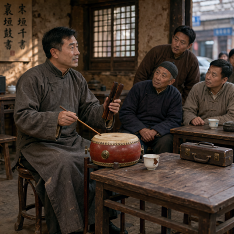
- 山西省襄垣县2008 第二批 · 新增项目官方页 →
- V-63
萍乡春锣
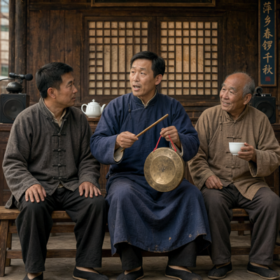
- 江西省萍乡市2008 第二批 · 新增项目官方页 →
- V-64
- V-65
莺歌柳书
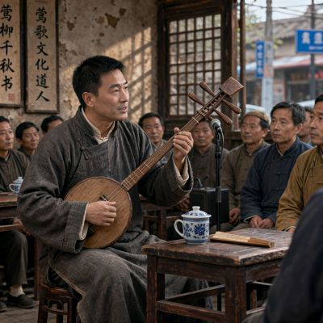
- 山东省菏泽市2008 第二批 · 新增项目官方页 →
- V-66
平湖钹子书
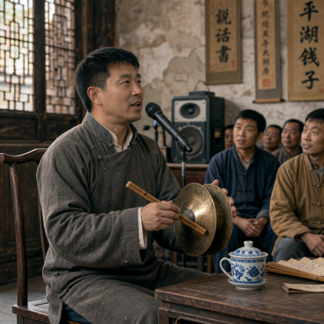
- 浙江省平湖市2008 第二批 · 新增项目官方页 →
- V-67
- V-68
- V-69
大调曲子
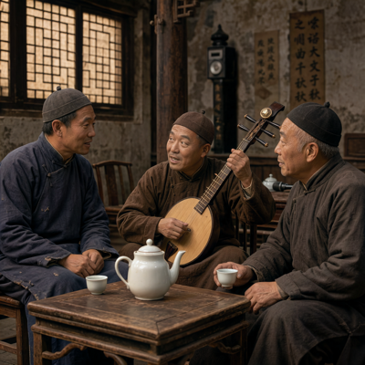
- 河南省南阳市2008 第二批 · 新增项目官方页 →
- V-70
湖北小曲
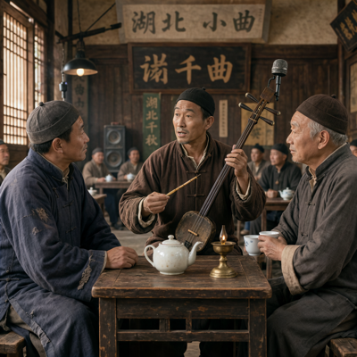
- 湖北省武汉市2008 第二批 · 新增项目官方页 →
- V-71
南曲
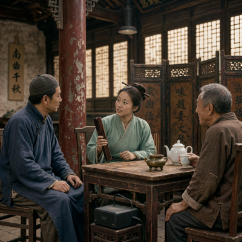
- 湖北省五峰土家族自治县2008 第二批 · 新增项目官方页 →
- V-72
秦安小曲
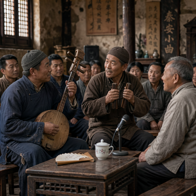
- 甘肃省秦安县2008 第二批 · 新增项目官方页 →
- V-73
徐州琴书
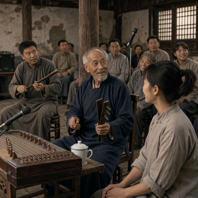
- 江苏省徐州市2008 第二批 · 新增项目官方页 →
- V-74
恩施扬琴
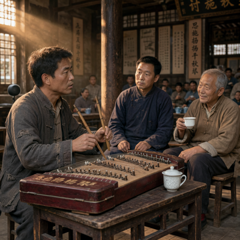
- 湖北省恩施市2008 第二批 · 新增项目官方页 →
- V-75
- V-76
- V-77
- V-78
- V-79
- V-80
朝鲜族三老人
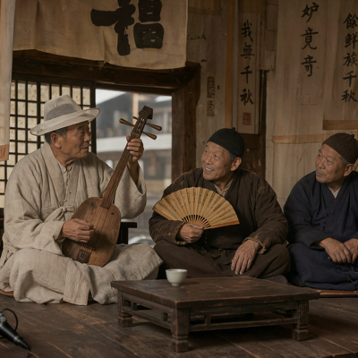
- 吉林省和龙市2008 第二批 · 新增项目官方页 →
- V-81
南京白局
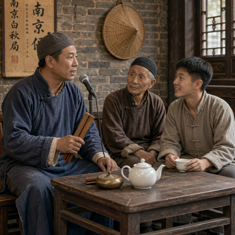
- 江苏省南京市秦淮区2008 第二批 · 新增项目官方页 →
- V-82
武林调
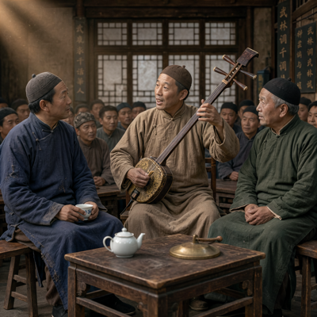
- 浙江省杭州市2008 第二批 · 新增项目官方页 →
- V-83
绍兴宣卷
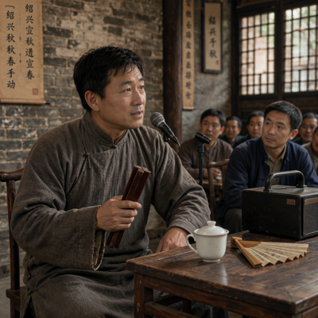
- 浙江省绍兴县2008 第二批 · 新增项目官方页 →
- V-84
- V-85
- V-86
- V-87
广西文场
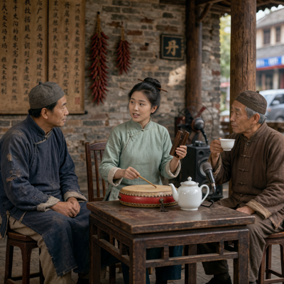
- 广西壮族自治区桂林市2008 第二批 · 新增项目官方页 →
- V-88
车灯
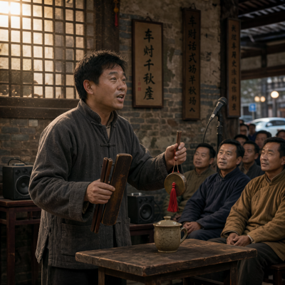
- 重庆市曲艺团2008 第二批 · 新增项目官方页 →
- V-89
眉户曲子
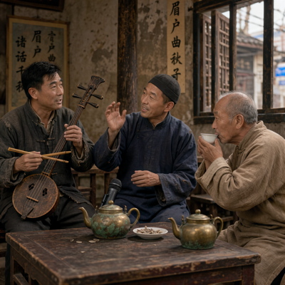
- 陕西省户县2008 第二批 · 新增项目官方页 →
- V-90
韩城秧歌
- 陕西省韩城市2008 第二批 · 新增项目官方页 →
- V-91
- V-92
青海平弦
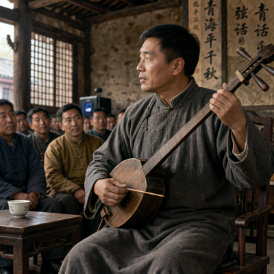
- 青海省西宁市2008 第二批 · 新增项目官方页 →
- V-93
青海越弦
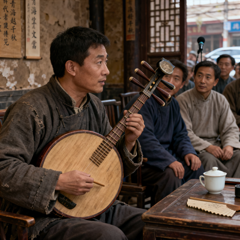
- 青海省西宁市2008 第二批 · 新增项目官方页 →
- V-94
青海下弦
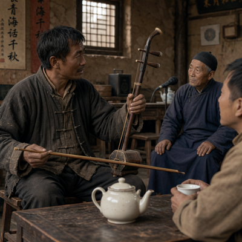
- 青海省2008 第二批 · 新增项目官方页 →
- V-95
好来宝
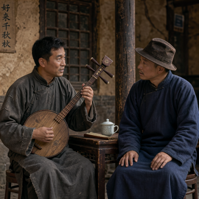
- 内蒙古自治区科尔沁左翼后旗2008 第二批 · 新增项目官方页 →
- V-96
哈萨克族铁尔麦
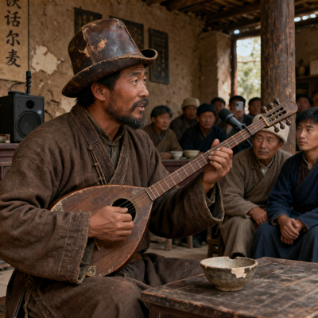
- 新疆维吾尔自治区伊犁哈萨克自治州2008 第二批 · 新增项目官方页 →
- V-97
莲花落
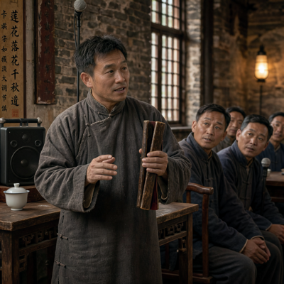
- 山西省太原市2011 第三批 · 新增项目官方页 →
- V-98
长子鼓书
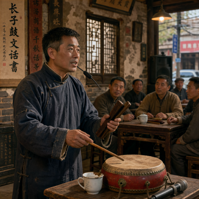
- 山西省长子县2011 第三批 · 新增项目官方页 →
- V-99
翼城琴书
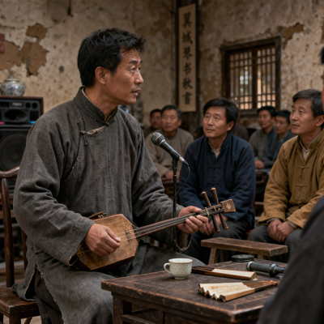
- 山西省翼城县2011 第三批 · 新增项目官方页 →
- V-100
曲沃琴书
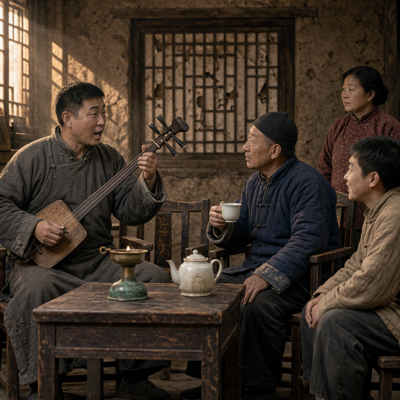
- 山西省曲沃县2011 第三批 · 新增项目官方页 →
- V-101
泽州四弦书
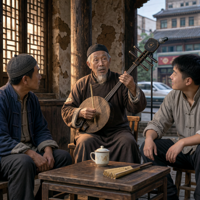
- 山西省泽州县2011 第三批 · 新增项目官方页 →
- V-102
- V-103
永康鼓词
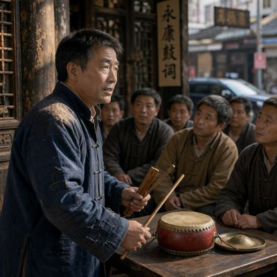
- 浙江省永康市2011 第三批 · 新增项目官方页 →
- V-104
唱新闻
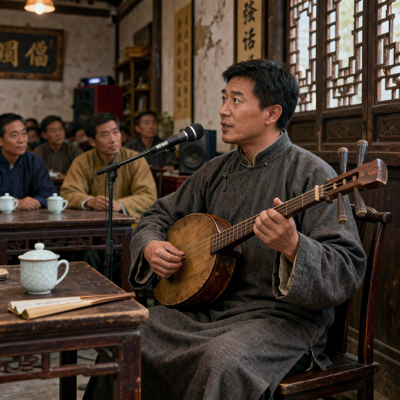
- 浙江省象山县2011 第三批 · 新增项目官方页 →
- V-105
渔鼓道情
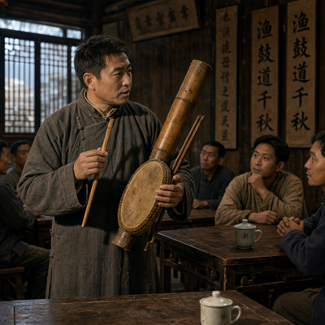
- 安徽省萧县2011 第三批 · 新增项目官方页 →
- V-106
三棒鼓
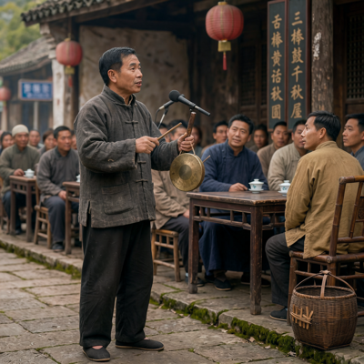
- 湖北省宣恩县2011 第三批 · 新增项目官方页 →
- V-107
祁阳小调
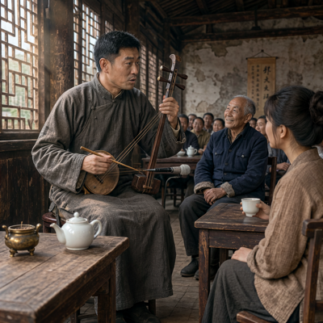
- 湖南省祁阳县2011 第三批 · 新增项目官方页 →
- V-108
粤曲
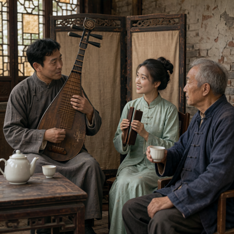
- 广东省广州市2011 第三批 · 新增项目官方页 →
- V-109
木鱼歌
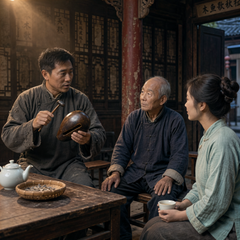
- 广东省东莞市2011 第三批 · 新增项目官方页 →
- V-110
四川评书
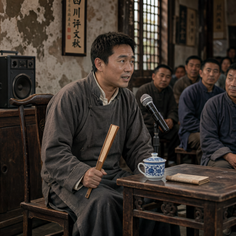
- 重庆市曲艺团2011 第三批 · 新增项目官方页 →
- V-111
洛南静板书
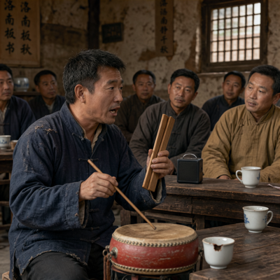
- 陕西省洛南县2011 第三批 · 新增项目官方页 →
- V-112
南音说唱
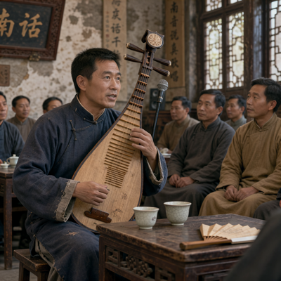
- 澳门特别行政区2011 第三批 · 新增项目官方页 →
- V-113
河州平弦
- 甘肃省临夏市2011 第三批 · 新增项目官方页 →
- V-114
- V-115
数来宝
- 北京市东城区2014 第四批 · 新增项目官方页 →
- V-116
梅花大鼓
- 天津市2014 第四批 · 新增项目官方页 →
- V-117
弹唱
- 山西省吕梁市离石区2014 第四批 · 新增项目官方页 →
- V-118
浦东宣卷
- 上海市浦东新区2014 第四批 · 新增项目官方页 →
- V-119
丽水鼓词
- 浙江省丽水市莲都区2014 第四批 · 新增项目官方页 →
- V-120
客家古文
- 江西省于都县2014 第四批 · 新增项目官方页 →
名录数据来源：中国非物质文化遗产网